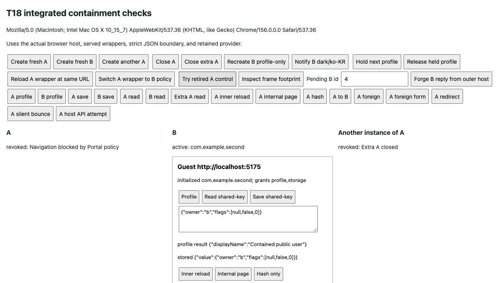

A의 이동은 A에서 막고,
B의 연결과 데이터는 지킵니다.
조사 후보를 실제 예제에 연결했습니다. 한 호스트 페이지에 서로 다른 출처의 미니 앱을 함께 두고, 각 Portal의 연결을 따로 종료합니다. 연결을 새로 만들어도 앱 데이터는 바깥 호스트의 저장소에 남습니다.
1 · 이전에는 돌아온 앱이 옛 연결을 다시 쓸 수 있었습니다
출처 검사는 외부 페이지의 메시지를 거절하지만, 외부에 갔다가 원래 출처로 돌아온 사실까지 기억하지는 않았습니다. 이제 브라우저가 외부 문서 로딩을 막고, 해당 정책 위반이 발생한 Portal의 연결을 끝냅니다. 원래 주소로 돌아온다고 자동으로 되살아나지 않습니다.
| 상황 | T18의 동작 |
|---|---|
| A가 B의 출처로 이동 | A의 CSP로 차단하고 A만 폐기. B의 대기 요청은 유지 |
| A가 내부 페이지로 이동·새로고침 | 반복 초기화 허용. 저장 데이터와 권한 유지 |
| 호스트가 새 A를 생성 | 새 연결을 만들고 기존 A 저장소 사용 |
| 보호 문서 자체를 같은 URL로 새로고침 | 다른 Document이므로 옛 권한 연결을 재사용하지 않고 폐기 |

2 · 통신 담당자와 데이터 보관자를 나눴습니다
신원·권한·저장소
CSP·커널·연결
client·화면
앱별 저장소 유지
별도 CSP·커널·연결
다른 출처
보호 문서는 호스트가 관리하는 HTML입니다. 미니 앱 코드가 아닙니다. 보호 문서마다 자기 미니 앱의 출처만 허용하며, 다른 Portal의 출처를 함께 허용하지 않습니다. 한 페이지 전체를 하나의 Portal이나 하나의 미니 앱 출처로 제한하지 않습니다.
browser-portal.ts는 바깥 호스트의 등록 정보와 수명을 관리하고, portal-wrapper.ts는 안쪽 커널과 통신을 연결합니다. protocol·client·host 커널에는 DOM 코드를 넣지 않았습니다.
3 · 브라우저가 이동을 막고, 우리는 그 연결을 폐기합니다
Wrapper A: frame-src http://localhost:5174
Wrapper B: frame-src http://localhost:5175서버의 정책 선택 코드가 실제 HTTP 응답 헤더에 넣을 값을 정합니다. 알 수 없는 앱이면 frame-src 'none'으로 로딩을 허용하지 않습니다. srcdoc를 넣어 부모 정책을 물려받게 하는 방식으로 대체하지 않았습니다.
return event.isTrusted &&
event.disposition === 'enforce' &&
event.effectiveDirective === 'frame-src';실제 검사 조건입니다. 브라우저가 만든 이벤트이고 실제 차단 정책에 해당해야 합니다. 자바스크립트로 만든 가짜 이벤트나 차단 없이 보고만 하는 정책으로 연결을 끊지 않습니다.
폐기할 때는 비활성화 → 옛 함수 접근 차단 → 연결·리스너·게스트 iframe·보호 문서 iframe 정리 순서로 진행합니다. 한 정리 작업이 실패해도 나머지를 시도합니다. 이미 실행한 저장·삭제를 되돌리는 기능까지 추가한 것은 아닙니다.
4 · 닫힌 연결은 늦은 응답을 보내지 않습니다
시간이 걸리는 프로필 요청을 실행한 뒤 Portal을 닫을 수 있습니다. 나중에 프로필 작업이 끝나더라도 그 결과가 옛 프레임이나 새로 만든 Portal에 전달되면 안 됩니다.
send(message) {
if (closed) {
return;
}
peerWindow.postMessage(message, peerOrigin);
}실제 transport의 전송 부분을 줄인 코드입니다. close는 먼저 closed를 true로 만들고 구독 목록을 비웁니다. 그 뒤 브라우저 리스너를 제거합니다. 제거가 실패하거나 close를 다시 호출해도 연결은 닫힌 상태를 유지합니다.
진행 중인 수신 목록도 닫기·구독 해제를 반영합니다. 보호 문서의 전달 함수도 비활성 상태를 확인해, 오래된 콜백이 커널을 다시 실행하지 못하게 합니다.
5 · 같은 출처여도 객체가 만들어진 자리는 다릅니다
바깥 호스트와 보호 문서는 출처가 같아도 JavaScript 실행 문맥이 따로 있습니다. 바깥에서 만든 객체를 안쪽 검사기에 그대로 넘기면 Object.prototype 기준이 달라 거절될 수 있다는 것을 지난 조사에서 확인했습니다.
검사·데이터 복사
읽기·검사·사용
json-boundary.ts가 이 경계를 담당합니다. Date·undefined·NaN·순환 참조를 먼저 거절하고, 데이터 속성의 설명서인 descriptor를 읽어 복사합니다. getter나 toJSON을 호출해 값을 바꾸지 않습니다. __proto__ 같은 이름도 데이터 키로 보존합니다.
미니 앱 요청을 이 함수로 다듬어 주는 것은 아닙니다. 게스트 요청은 기존 커널 검사에 원래 값 그대로 들어갑니다. 이번 함수는 신뢰된 호스트 내부의 설정·알림·provider 데이터 전달에만 사용합니다.
필드가 없을 때는 상속된 getter를 읽지 않도록 Object.hasOwn도 확인합니다. 이 예외 경로 역시 먼저 실패하는 테스트로 확인한 뒤 수정했습니다.
6 · 연결은 없어져도 앱별 서랍은 남깁니다
const storage = createMemoryStorageProvider();저장소는 바깥 호스트에서 한 번 생성합니다. 새 Portal을 만들 때마다 새 저장소를 만드는 구조가 아닙니다.
const value = await storage.get(manifest.id, key);
requireActive();
return encodeJson(value);바깥 저장소 전달 코드의 실제 읽기 부분입니다. manifest.id는 호스트가 등록한 앱 신원입니다. 게스트가 보낸 key는 서랍 안의 키만 고를 뿐, 다른 앱의 서랍을 선택할 수 없습니다. 기다리는 동안 Portal이 폐기됐다면 값을 돌려보내기 전에 다시 거절합니다.
| 상황 | 데이터와 연결 |
|---|---|
| A와 B가 같은 key 사용 | 다른 앱 id이므로 데이터 분리 |
| 같은 앱 A를 두 번 실행 | 데이터 공유, 연결·요청 번호·권한 검사는 각각 유지 |
| A 폐기 후 호스트가 새 A 생성 | 새 연결에서 기존 A 데이터 조회 |
| 바깥 호스트를 새로고침 | 메모리 provider도 새로 생성되므로 데이터 초기화 |
이것은 storage.* 제공자의 수명입니다. 브라우저의 localStorage·IndexedDB는 계속 엔진의 출처 규칙을 따릅니다. 이번에 영구 저장소나 여러 저장 작업의 트랜잭션까지 추가하지 않았습니다.
7 · 테스트와 실제 브라우저를 따로 확인했습니다
기존 995개 → 전체 1,077개, 38개 파일 통과
루트 타입 검사·기존 실험 타입 검사·Biome·두 예제 빌드 통과
닫힌 연결, 잘못된 데이터, 오래된 신원, 정리 실패, 늦은 결과 등을 검증
새 모듈은 먼저 테스트를 작성하고 구현했습니다. 기존 transport 동작에서는 닫은 뒤 전송·재구독·재진입 등의 새 테스트 다섯 개가 실패했습니다. iframe 삽입 실패와 상속된 선택 필드 getter 문제도 실패를 확인하고 수정했습니다.
실제 Chrome 156에서는 두 출처의 초기화·저장소 분리·같은 앱의 데이터 공유·내부 이동·외부 직접 이동·폼·리다이렉트·외부 왕복 차단·B 대기 요청 유지·권한 보존·재생성 뒤 데이터 유지·실행 문맥 간 알림을 확인했습니다. 최종 빌드 산출물에서도 저장·알림·A만 폐기하는 동작을 다시 확인했습니다.
브라우저 도구의 중첩 iframe 버튼 조작 제약 때문에 별도 검증 페이지의 바깥 버튼으로 같은 실제 client 호출과 이동 함수를 실행했습니다. 이 통로는 검증용이며 SDK 메서드가 아닙니다. 실제 브리지는 여전히 바로 위 부모 창만 신뢰합니다. 같은 호스트 출처라도 바깥 창에서 보낸 가짜 응답은 거절됐습니다.
영문 검증 보고서에 24개 화면 기록, 실제 헤더, 진단 기록과 한계를 연결했습니다. 테스트 개수에 수동 관찰을 더하지 않았습니다.
현재 브라우저 개발 구성과 기록한 Chrome 동작을 검증했습니다. 모든 브라우저·URL 방식·메모리 회수·즉시 작업 취소를 보장하지 않습니다. 같은 출처 문서의 오래된 응답과 상대 연결 종료 알림은 기존 SPEC §11의 미결 사항입니다. 운영용 HTTPS 호스팅과 네이티브 코어를 추가하지 않았습니다.
8 · 직접 실행해 보기
pnpm run dev저장소 루트에서 실행하고 http://localhost:5173을 엽니다. 호스트 5173, 첫 앱 5174, 두 번째 앱 5175를 함께 시작합니다. 이미 사용 중인 포트가 있으면 다른 포트로 넘어가지 않고 실패합니다.
일반 화면의 Start second app으로 두 앱을 함께 열 수 있습니다. 별도 검증 페이지에서는 A save·B save → A read·B read → Hold next profile·B profile → A to B → Release held profile 순서로 실행하면 한쪽만 닫히고 다른 요청이 완료되는 흐름을 볼 수 있습니다.
ADR 승인 기록은 0397b70으로 커밋·푸시했습니다. T18 구현과 이 해설은 그 이후의 로컬 작업입니다. 다음 task는 T19의 전체 오류 코드 검증입니다.